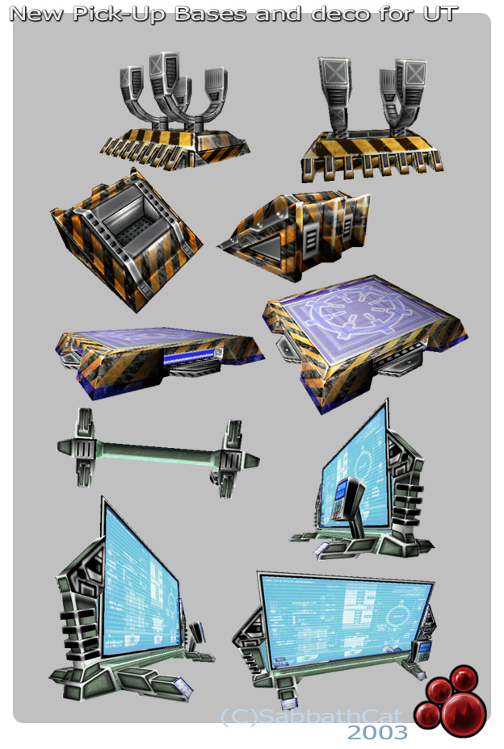

SabbathCat/Developer Journal
A bunch of stupid mutators and ramblings for UT
WIP Stuff 05 / 09 / 06 - Where did last year go?
w00t. More C8H10N4O2!
WIP Stuff 29 / 12 / 05 - Where did last year go?
Oops. Skipped a year! In the intervening time I made a couple of playermodels, a whole slew of maps and managed to get worse/lazier at unreal script than ever before!
Roll on 2006!
Ch3z: pssst.. hey Rip, rub your eyes and look again. It looks like you skipped about 10 years.
WIP Stuff 18 / 04 / 04 - Creating a Dropship thing in Milkshape
It's probably going to be totally overpowered to have a massive flying thing for carrying passengers, but, ah well, hehe It's just an excecise in trying to get something from Milkshape into UT2004 with minimum hassle.
The plan is, since it's a solid, non-animated mesh, without wheels and very little different from a Raptor other than speed, passenger capacity and size, it'll be straight forward enough to get into game.
The first challenge at the moment is finding how to actually get the mesh imported and usable.
Heheh, if only the version of Maya PLE that came with the game actually worked with the Unreal plug-in. 
P
WIP Stuff 13 / 01 / 04 - HAPPY NEW YEAR!
Some good stuff, some bad. I've got a whole slew of new models working in UT, from Wall mounted Tv screens to eviromapped windows, but at the same time I can't get the PickUpBases package to stop conflicting with the KickerBase package when imported into MyLevel.
The intention was to create a bunch of packages that people could pick and choose to import into their maps, but for some reason something odd is happening with the textures when I import both the KickerBase package and the PickUpBases package into MyLevel, whichever one that's imported first seems to corrupt the other packages textures.
I've also had a couple of classes go missing somehow from the folder of uncompiled code.
It's all going pear shaped, this seemed so easy to begin with.
AAARgh.
WIP Stuff 30 / 12 / 03
Last update this year I guess, I've been playing around with MilkShape. It's a lot easier than it first appears, once you figure out the basics.
I've been making some super-low-poly models for UT, some will be optional bases for the new kicker actor and some will be simple holders for Pick-ups.
The TV thing is going to be triggerable, so you can activate sound/texture changes.

WIP Stuff 13 / 12 / 03
var int Minutes, Sugar, Coffee; Minutes = 10; Coffee = 1; Sugar = 3; Time += Abs(Minutes/(Coffee*Sugar))
Finally vectors make sense!
This tutorial is the Canines Proverbials :
http://www.planetunreal.com/wod/tutorials/vectors.htm
W00t, it kinda clicked and just all came into focus.
WIP Stuff 13 / 12 / 03
AAAAARGh
Vectors and stuff.
AAAARGH!!!!
WIP Stuff 12 / 12 / 03
Getting the hang of things sort of. I've figured out arrays, most variables, a bit of flow syntax aith if/esle stuff and a bit on changing properties of spawned actors through "ActorName.Property" style references. There's some cool stuff can be done with such little code.
Now I just need to figure out how I can attach actors together like happens with weapons and playermodels.
I fancy making a big sprite snake thing just to see if it can be done. 
WIP Stuff 07 / 12 / 03
Wow. I think I've finally made my first step towards actually programming stuff in UnrealScript as
opposed to simply copy/pasting stuff,fiddling with defaults and replacing meshes etc.
I've now managed to code my first bunch of loops and if/else clauses
Man, some of it is simpler than I thought, some of it is WAY harder than I thought.
Still, it feels so much more of an achievement to compile code you've handwritten and get no bugs than
to simply be compiling stuff you've botched together from bits of other code.
So, onto learning vectors next, this 3D malarky is a long way from my old GWbasic days.
WIP Stuff 04 / 12 / 03
W00t. Working on scripting a UT2003 style kicker, with custom mesh, sounds and a funky
emitter effect.
At the moment I'm trying to suss out random pitch on the kick noise to give it a bit of dynamism.
In the works is a system for choosing colours based on teams, at the moment it's a case of choosing the skins for each of the two meshes included. I'm sure there's a way to do it so (1) it spawns the emitter effect ( a mesh that has the SheildBelt Effect) and sets the skins for both the base and the the effect depending on which team the mapper has specified in the default properties. The flab-base actor does it, so that's where I plan to start studying code.
WIP Stuff 19 / 11 / 03
( Note : English Calendar date, it's not the 19th month! )
Hehe. Gave up on the gravity zone within 30mins of posting it. I think it's something to do with the engine itself.
Here's another, more interesting project flagbasemutatorjrm
Discussion
Wormbo: Welcome to the Wiki! BTW: I'd suggest writing [[actor]]s instead of [[actor|actors]], it's less typing work. 
SabbathCat: You're right, but start as you mean to go on, I'm going to try to keep things user-friendly, enough to keep the likes of Jacob Neilson happy.
King Mango Sup Cat? Looks good and I like the sound, but it could be louder? King Mango
SabbathCat: 'lo Mango. Sounds are expanded now, ambient and random pitched 'kicked' sounds.
MythOpus: Those are nice Sabbath
SuperApe: /waves hello.
Category Journal